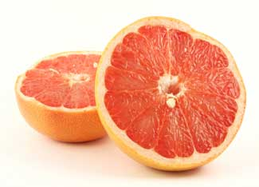

Can eating grapefruit really fight cancer? Do you need to drink eight glasses of water every day? When you have health questions, are you able to interpret the thousands of health Web sites that promote wonder cures, advice and diets? Most people aren't.
We all know it's wise to read information online with a skeptical eye and consider its source, but it's especially important when you're searching for health advice. The good news is that there are many reliable health sites out there - the 12 listed below are great resources to get you started down the path to wellness.
GENERAL HEALTH
Medline Plus
Hosted by U.S. National Library of Medicine and National Institutes of Health, this site has health information sorted by condition, plus a searchable drug and supplements database and a medical dictionary.
MayoClinic.com
Find practical information on diseases and healthy living, plus an 'Ask a Mayo Clinic Specialist' feature.
U.C. Berkeley Wellness Letter
Find archives for the University of California - Berkeley's 'Wellness Letter' newsletter, as well as other advice on nutrition, fitness and self care.
HERBAL AND CAM REFERENCES
Herbs for Health Magazine Library
This handy resource has links to German Commission E Monographs. (The Commission was established by the German government in the '70s to review herbal remedies.) You'll also find a link to HerbClip Online, a database of medicinal plants hosted by the American Botanical Council.
About Herbs, Botanicals & Other Products
This extensive herb library is hosted by the Memorial Sloan-Kettering Cancer Center in New York.
Rosenthal Center for Complementary and Alternative Medicine
A Columbia University resource on complimentary and alternative medicine (CAM), including links to other reputable health sites, and advice on how to find a practitioner.
NUTRITION SITES
The Nutrition Source
A Harvard School of Public Health site on nutrition and vitamins.
Center for Food Safety
Learn why eating organic food is a healthy choice, as well as which food production technologies to avoid, such as hormone injection and genetic engineering.
USDA Nutrient Data Laboratory
Search this USDA national nutrient database to find nutritional information on your favorite food items, including junk food.
USDA Food and Nutrition Information Center
Learn what the dietary reference intake (DRI) levels are for common vitamins, minerals and other nutrients. (Note: DRIs were formally known as Recommended Daily Allowances, or RDAs.)
ENVIRONMENTAL HEALTH
The Collaborative on Health and the Environment
Learn how environmental toxins can affect our health. See the 'Science' tab for studies and information on health issues such as asthma, cancer and infertility.
Environmental Working Group Skin Deep Database
Search this cosmetic safety database to find out what chemicals may be lurking in your personal care products, such as shampoo, cosmetics, eye drops and baby lotion.
|
 ISTOCKPHOTO With the right resources, you can get the scoop on grapefruit and foods recommended for health. |
|
|